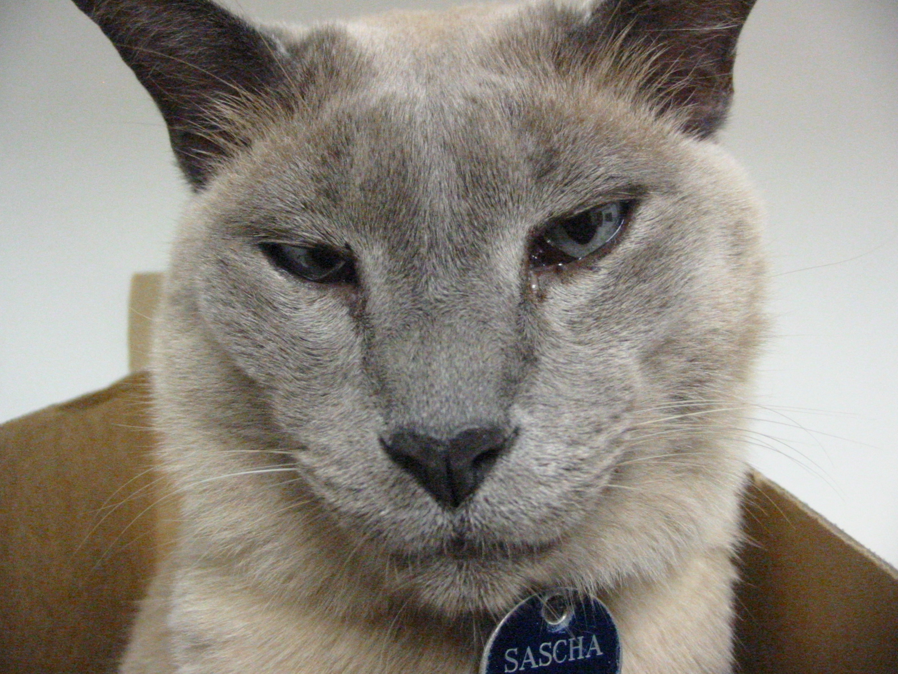

The Tonkinese cat is a shorthair with an outgoing personality. They have very richly colored eyes ranging from blue to green. They have good memory and may stop when you say no. And then do it when you are not watching. Some people describe these cats as part puppy, part monkey, and part elephant, due to how they run around noisily. They may occasionaly vocalize to communicate a need for something such as food and affection.
